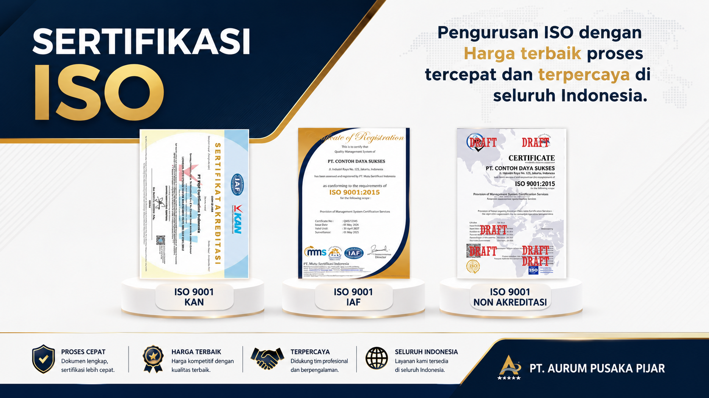
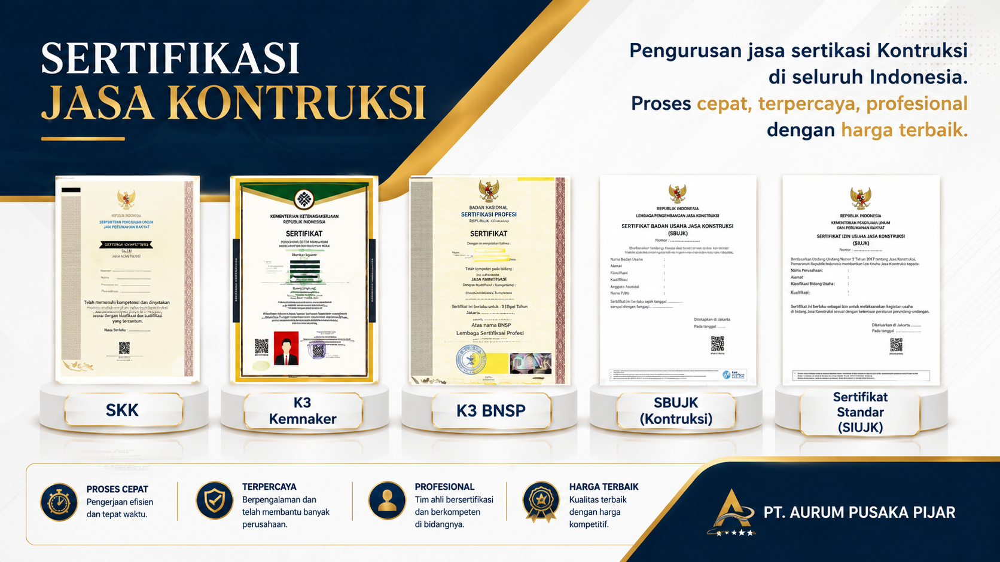
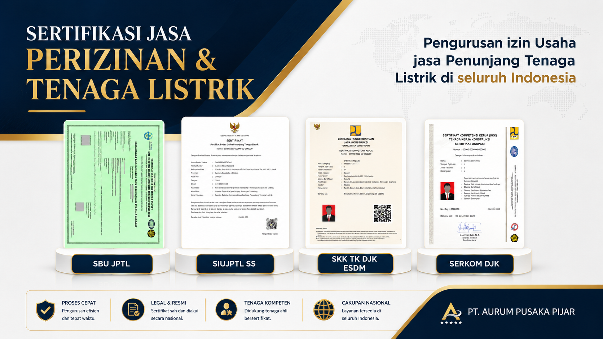
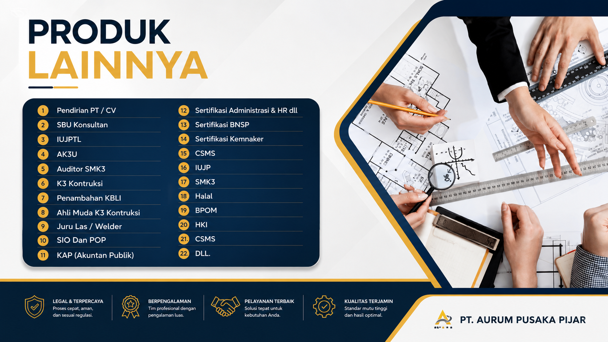
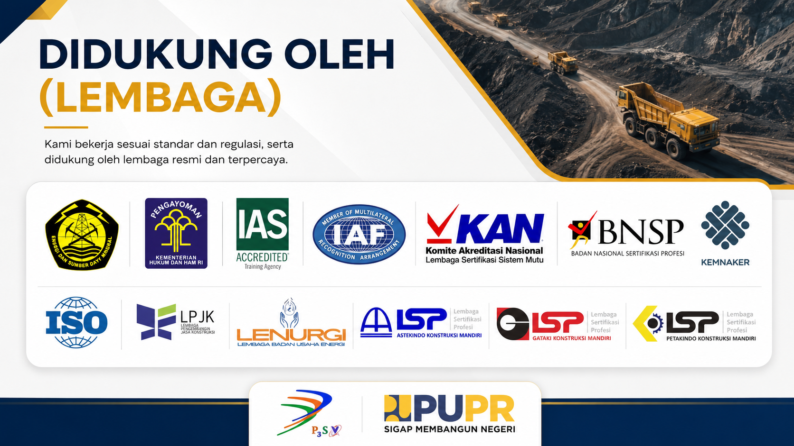

Sertifikasi ISO
Kebutuhan sistem manajemen sesuai ruang lingkup organisasi.
Pelajari →Kami membantu kebutuhan sertifikasi, perizinan, konstruksi, tenaga listrik, dan layanan penunjang usaha dengan proses yang terarah dan profesional.

Mulai dari sertifikasi hingga perizinan dan pengembangan kompetensi, kami membantu menyiapkan proses sesuai kebutuhan usaha.
Kebutuhan sistem manajemen sesuai ruang lingkup organisasi.
Pelajari →SKK, SBUJK, SIUJK dan layanan terkait kompetensi serta badan usaha konstruksi.
Pelajari →Pengurusan perizinan dan layanan penunjang tenaga listrik sesuai kebutuhan usaha.
Pelajari →PT/CV, SBU Konsultan, K3, SMK3, BNSP, Kemnaker, CSMS, Halal, BPOM, HKI dan lainnya.
Lihat daftar →Kami membantu proses persiapan dan pendampingan sertifikasi sesuai ruang lingkup dan kebutuhan organisasi.
Solusi pengurusan dan pendampingan untuk kebutuhan badan usaha maupun tenaga kerja konstruksi.

Pendampingan untuk kebutuhan usaha di bidang ketenagalistrikan dan layanan penunjangnya.

Kami membantu memetakan kebutuhan dokumen, kompetensi, dan tahapan proses agar pengurusan lebih terstruktur.
Daftar layanan dapat disesuaikan dengan jenis usaha dan kebutuhan perusahaan.
Pendirian PT / CV
02SBU Konsultan
03IUJPTL
04AK3U
05Auditor SMK3
06K3 Konstruksi
07Penambahan KBLI
08Ahli Muda K3 Konstruksi
09Juru Las / Welder
10SIO dan POP
11KAP (Akuntan Publik)
Sertifikasi Administrasi & HR
13Sertifikasi BNSP
14Sertifikasi Kemnaker
15CSMS
16IUJP
17SMK3
18Halal
19BPOM
20HKI
21CSMS
22Dan layanan lainnya
Materi promosi yang Anda kirim digunakan sebagai visual pendukung pada website.


Alur dapat disesuaikan dengan jenis layanan, ruang lingkup, dan persyaratan lembaga terkait.
Sampaikan jenis usaha dan kebutuhan dokumen/sertifikasi.
Kami membantu memetakan persyaratan dan tahapan proses.
Dokumen dipersiapkan dan proses berjalan sesuai jalur layanan.
Hasil layanan diserahkan sesuai ketentuan dan ruang lingkupnya.
Logo dan nama lembaga pada materi promosi ditampilkan sebagai referensi kategori/standar dan tidak otomatis menunjukkan afiliasi atau endorsement.
Hubungi tim kami untuk mendapatkan konsultasi awal dan penawaran sesuai kebutuhan.